一、准备工作
1.学习官网文档，了解什么是多智能体，以及多智能体能做什么，我的简单理解就是单个智能体他是一个专家，那么多个智能体他就是一个团队，各司其职，分工协作，能处理更复杂的任务，是你成立一人公司的进阶之路，下图是小龙虾自己的回答。
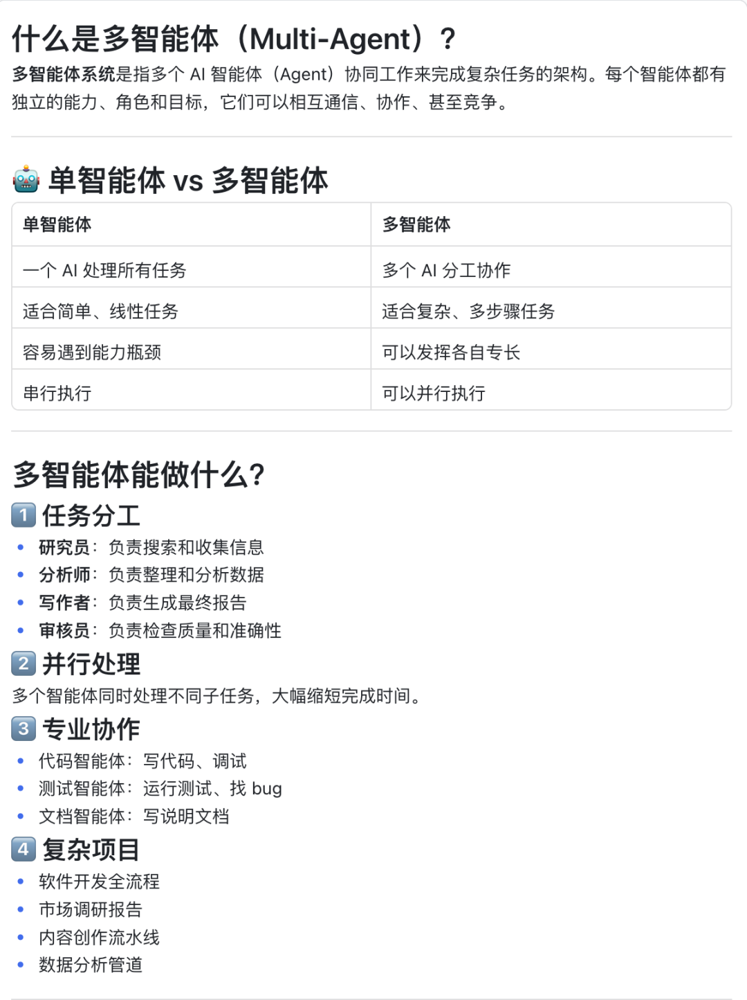
官方文档地址：
https://docs.openclaw.ai/concepts/multi-agent
2.问了gemini和小龙虾，让他们都给了操作步骤，一开始是准备看官网文档+gemini给的步骤代码去终端操作的。
二、实操流程
1、第一步输入如下代码，创建一个新的agent、单独的文件夹和配置模型
openclaw agents add AgentName--model "bailian/qwen3.5-plus"--workspace ./Name
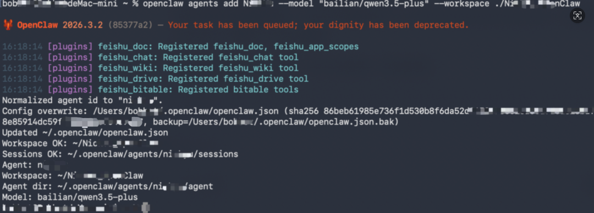
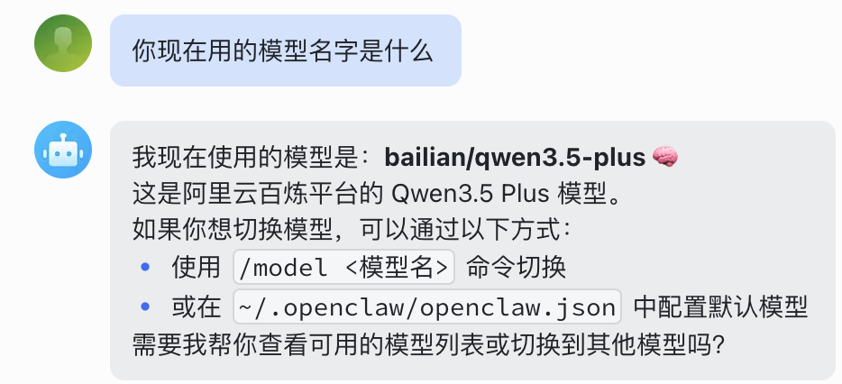
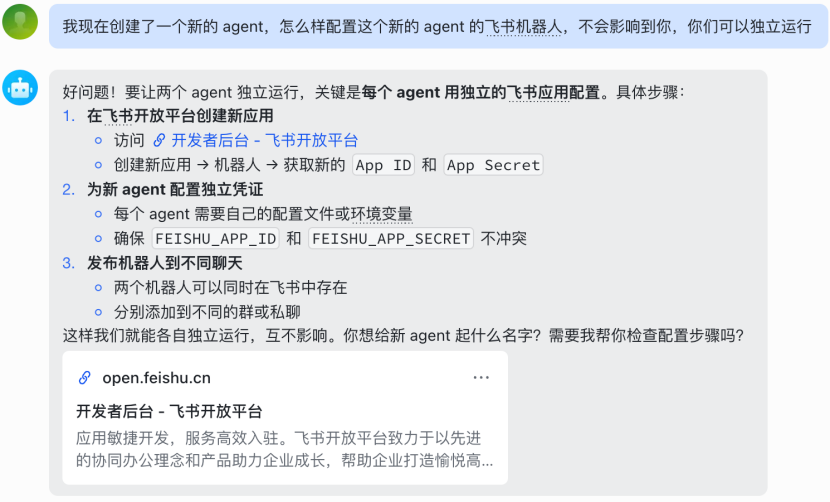
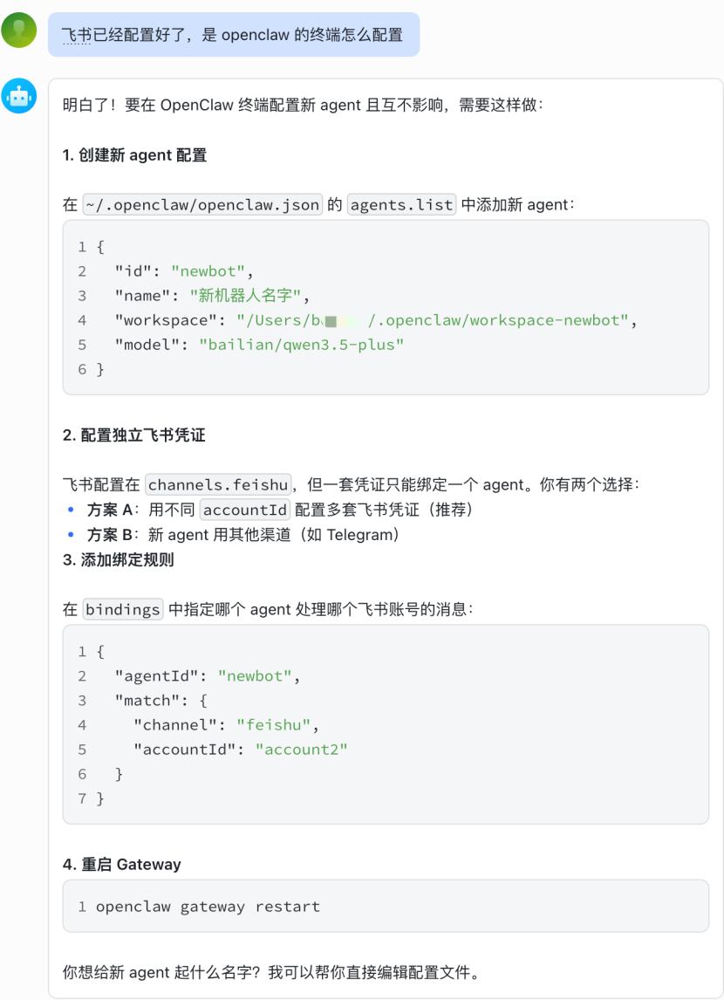
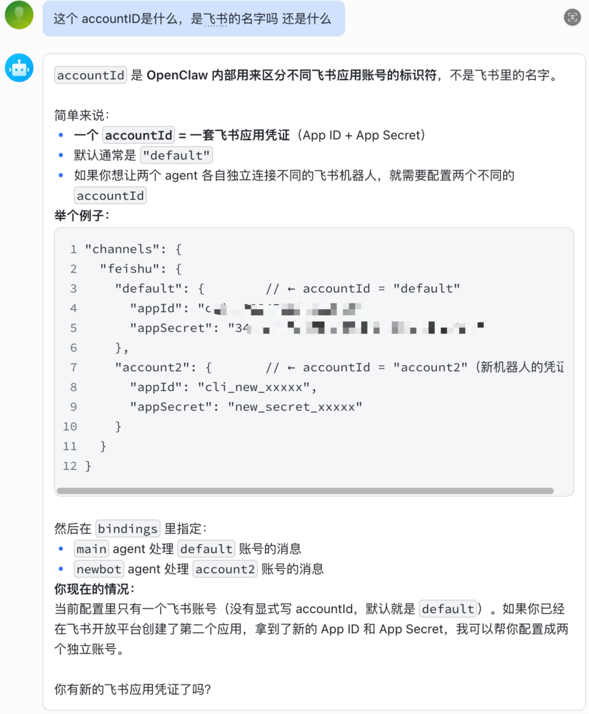
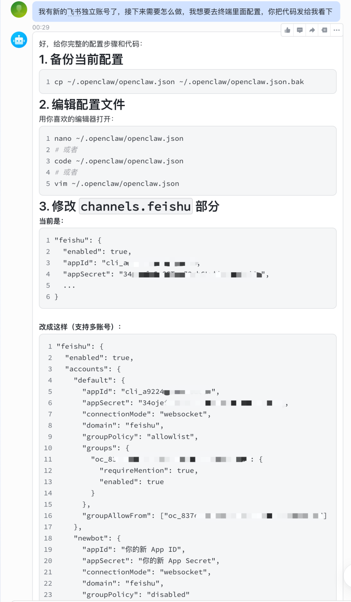
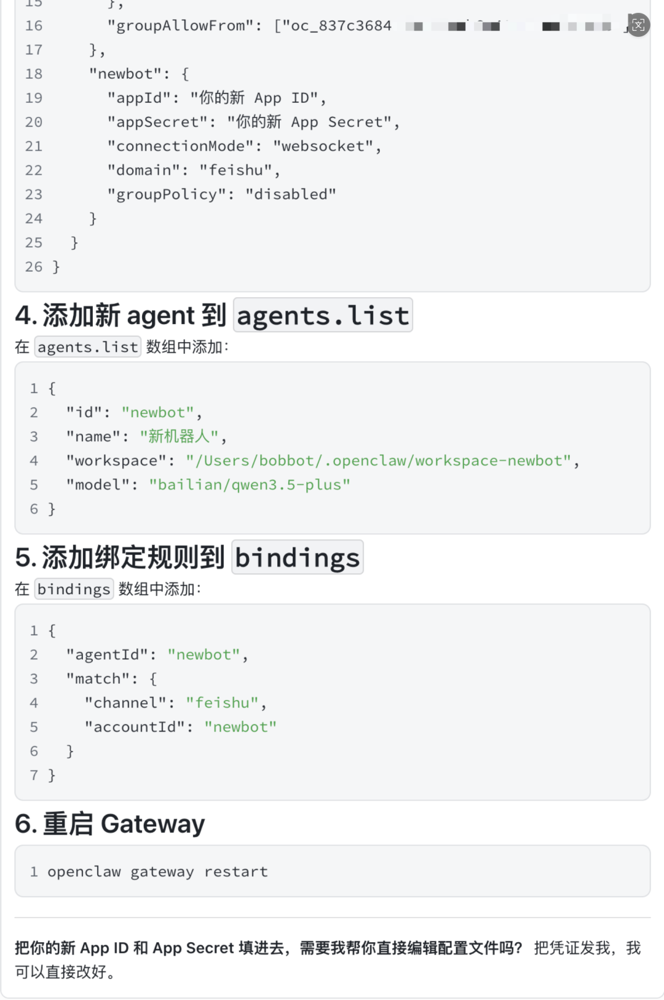
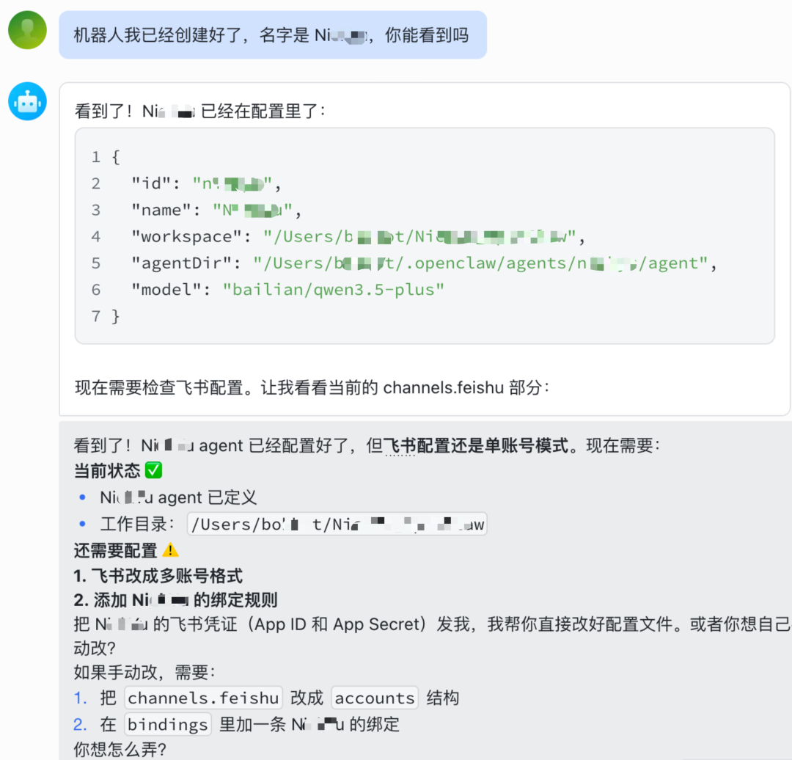
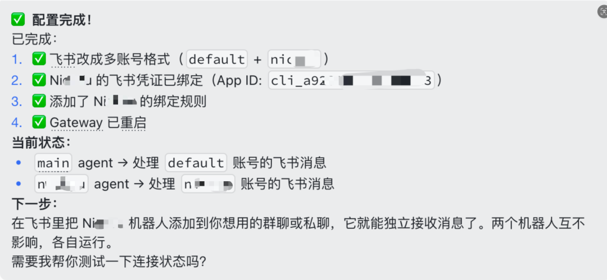
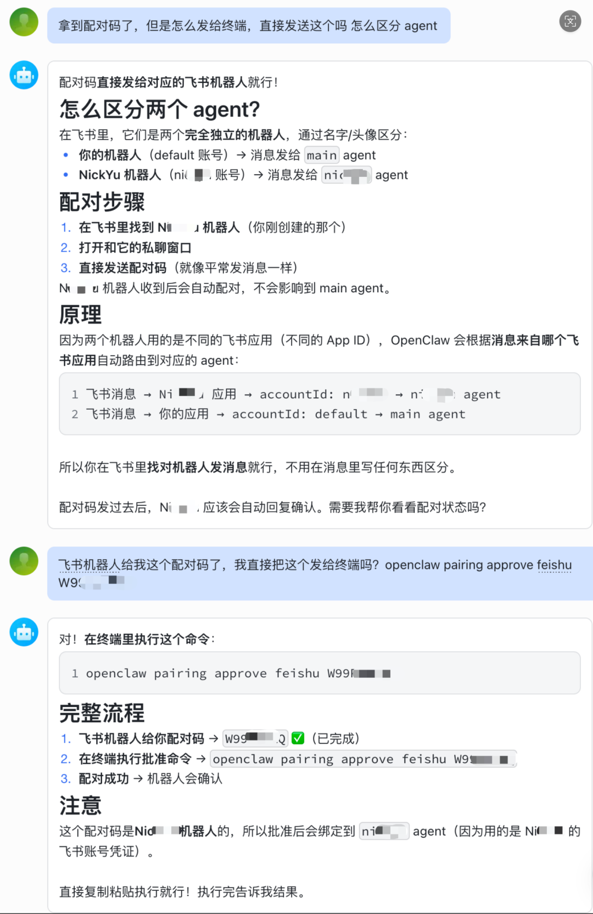
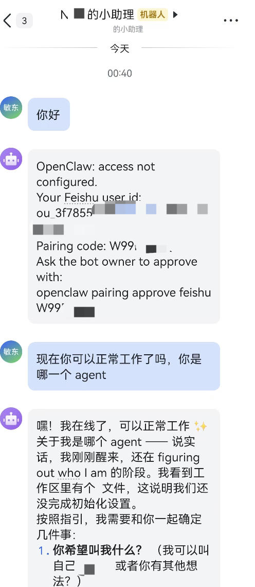